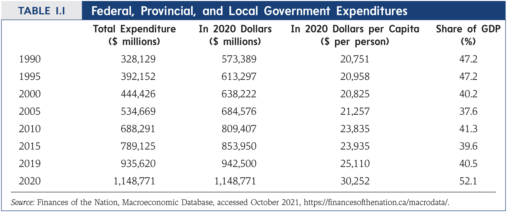
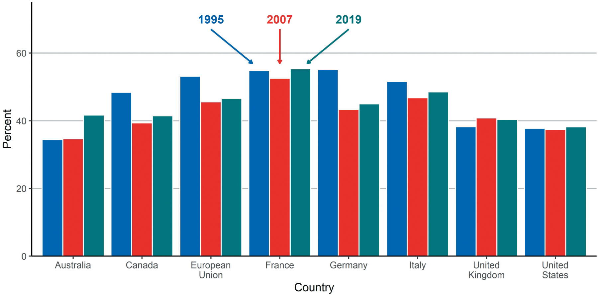
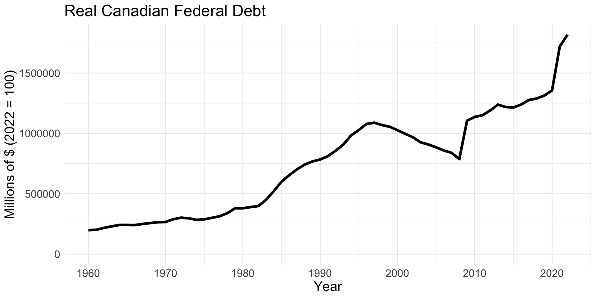
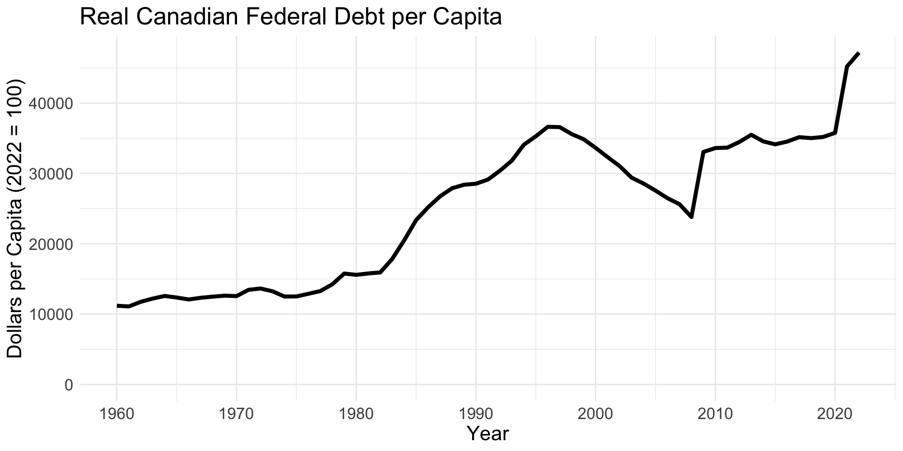
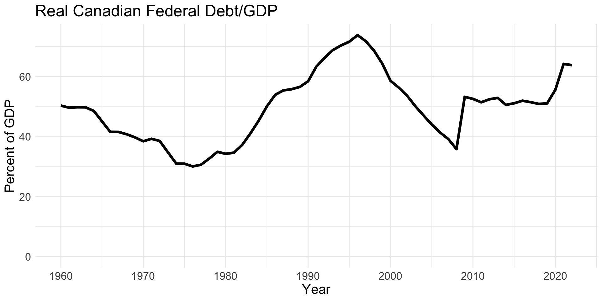
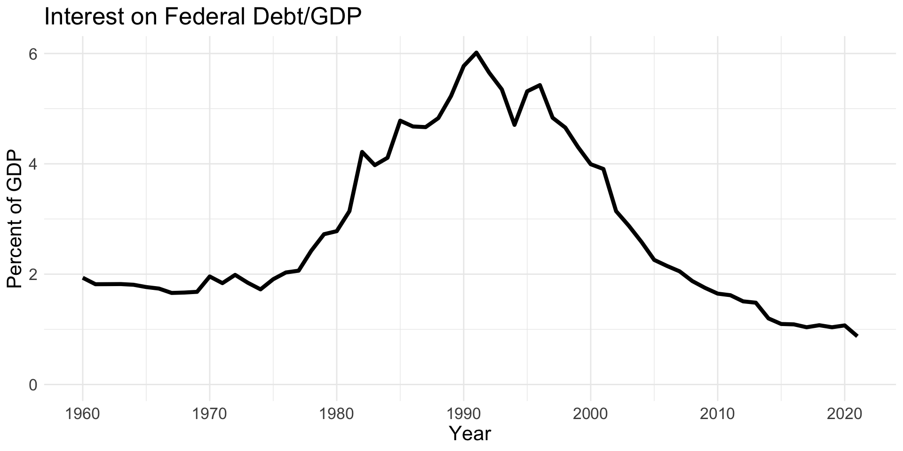
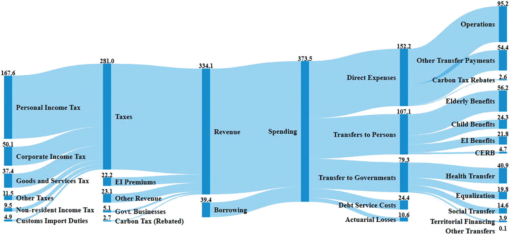

Introduction to Public Economics
EC313 - Public Economics: Taxation
Justin Smith
Wilfrid Laurier University
Fall 2025

Goals of This Section
Goals of This Section
Define Public Economics
Give broad overview of Canada’s government and public finance framework
Measure the “size” of government
Overview of government revenues and expenses
What is Public Economics?
Defining Public Economics
Public Economics is the study of the role of government in the economy
- It examines how government policies affect economic efficiency, income distribution, and overall welfare
Concerned with the microeconomic aspects of the economy
- How government actions affect individual and firm behavior
- Macroeconomic functions of government (fiscal policy, monetary policy) are in separate fields
Attempts to answer three key questions:
- When should the government interevene in the economy?
- What is the effect of these interventions?
- Why do they choose to intervene in this way?
When Should the Government Intervene?
Market Failures: Situations where the free market does not allocate resources efficiently
Public goods: goods that are non-excludable and non-rivalrous (e.g., national defense, public parks)
Externalities: costs or benefits that affect third parties not involved in a transaction (e.g., pollution)
Imperfect competition: markets dominated by a few firms, leading to monopolies or oligopolies
Assymetric information: situations where one party has more or better information than the other (e.g., used car market)
Irrational behaviour: situations where individuals do not make rational decisions (e.g., addiction, procrastination)
Effects of Alternative Interventions
Competitive markets (in theory) generate an efficient allocation of resources
- Allocation is Pareto Efficient: no one can be made better off without making someone else worse off
- Subject to specific assumptions
- Called the First Fundamental Theorem of Welfare Economics
But that allocation is not always equitable
- Some people may get significantly more resources than others
Effects of Alternative Interventions
Government can intervene to redistribute resources
In theory, it can do this without reducing efficiency
- Through transfers of initial wealth
- Called the Second Fundamental Theorem of Welfare Economics
In reality, government intervenes with taxes and transfers that may reduce efficiency
- Taxes can distort incentives and lead to inefficiencies
- Creates an efficiency-equity trade-off
Effects of Alternative Interventions
Direct Effects: Immediate impact of government policies on individuals and firms, without changes in their behaviour
Examples:
- A carbon tax on gasoline raises revenue from drivers
- Income taxes raise revenue from workers
- Corporate taxes raise revenue from firms
- Tariffs raise revenue from imports
- A tax credit for charitable giving reduces government revenue
Effects of Alternative Interventions
Indirect (Unintended) Effects: Effects of government policies due to changes in behaviour of individuals and firms
Examples:
- A carbon tax on gasoline may lead drivers to use public transit more
- Income taxes may lead workers to work fewer hours
- Corporate taxes may lead firms to invest less or move to a different jurisdiction
- Tariffs may lead consumers to buy fewer imported goods
- A tax credit for charitable giving may lead individuals to donate more
Much of current research in public economics focuses on these indirect effects
Why Do Governments Intervene in Particular Ways?
Political Economy: a field of economics that studies the interaction between politics and economics
- How do politics and economics drive policy and economic outcomes?
- Depends on economic system, political system, norms, etc.
- Some example research papers:
” Do Leaders Matter? National Leadership Growth Since World War II”
“Why Do Developing Countries Tax So Little?”
“Voting Technology, Political Responsiveness, and Infant Health: Evidence from Brazil”
Public choice: a subset of political economy that applies economic principles to political decision-making
Uses a rational choice framework (e.g. utility maximization) to study political decisions
Studies very similar topics to political economy as a whole
Normative vs. Positive Economics
Positive Economics: the study of how things are
- What are the effects of a carbon tax on gasoline consumption
- How do income taxes affect labour supply
- Primarily an empirical field
- Most research in public economics is positive economics
Normative Economics: the study of how things should be
- Should the government impose a carbon tax on gasoline?
- Should income taxes be progressive or flat?
- Key difference with positive economics is that it involves value judgements
- Primarily a theoretical field
Some Current Research Topics in Public Economics
Public economics is a broad research field with significant overlap with other fields like Labour, Education, Health Economics
Some of the research paper titles from the most recent NBER Public Economics meeting:
- “Paternalistic Social Assistance: Evidence and Implications from Cash vs. In-Kind Transfers”
- “Health Impacts of Federal Pandemic Aid to State and Local Governments”
- “The Racial Penalty in Job Ladder Transitions”
- “Behavioral Responses to Estate Taxation: Evidence from Taiwan”
- “The Big Economic Consequences of Small Financial Shocks: Evidence from Minor Car Crashes”
Canada’s Government
Introduction
In this section we discuss basics of Canada’s public finance system
Broad overview, not comprehensive
We cover
History
Responsibilities of each level of government
History
Tax and spending powers come from the Constitution Act, 1982
- Amends the British North America (BNA) Act, 1867
- Structure and powers of government are the same in both acts
- Constitution act adds elements like the Charter of Rights and Freedoms
Constitution act specifies federal and provincial responsibilities
- Federal: items that are common to all provinces
- Provincial: items that are specific to each province
Municipal responsibilities are not outlined in constitution
They are delegated by the provinces
Means lots of differences across provinces in the way municipalities operate
Federal Government
Key areas of federal responsibility as outlined in the constitution:
Direct and indirect taxation
National defence
Navigation and shipping (e.g marine shipping)
Regulation of trade and commerce (e.g. trade disputes, tariffs)
Criminal justice system
Money and banking
Census
Citizenship
Postal service
Federal Government
The federal government raises revenue mainly through direct and indirect taxes
Direct tax: paid by directly to the taxing authority that cannot be shifted to another entity
- e.g. income, estate, capital gains, property tax
Indirect tax: paid indirectly through an intermediary that can pass it to another entity
- e.g. sales tax (HST/GST), tariff
Federal Government
The federal government has broad taxing and spending powers
At the time of confederation, most revenue came from tariffs (customs duties)
Now the majority comes from personal and corporate income taxes and sales taxes
Figure: Composition of Canadian Federal Revenues
Provincial Government
Key areas of federal responsibility as outlined in the constitution:
- Direct taxation within the province (note: not indirect taxation)
- Prisons
- Hospitals
- Municipalities
- Education
- Natural resources
- Incorporation of companies
Provincial Government
Provincial government can only levy direct taxes
- Mainly income and property tax
- Courts have defined retail sales taxes and excise taxes on tobacco and gasoline as direct taxes (for some reason)
At confederation, most revenue came from federal government transfers to provinces
- Very little from direct taxation
Now, taxes account for 50% of revenues
- Rest is federal transfers, sales of goods and services, fines/fees, natural resources
Size of Government
Introduction
Politicians often quibble over the size of government
- Conservatives prefer smaller government
- Liberals tend to prefer larger government
There are different ways to measure its size
- Expenditures (total or as fraction of GDP)
- Revenues (total or as fraction of GDP)
- Government employment
- Number of regulations
Most common is to measure using annual expenditures
Classification of Expenditures
Can classify government expenditures into three types
Purchases of goods and services
Government buys many goods/services
Examples: Military equipment, buildings, consulting services, professional training
Transfers of income to people, businesses, other governments
- Examples: HST rebate, Canada Pension Plan, Canada Child Benefit
Interest payments
Government borrows to spend when revenues are insufficient
Does this by issuing bonds
Interest payments are due on that borrowing
Statistics on Expenditures
Figure: Canadian Government Expenditures
Statistics on Expenditures
Figure: International Government Expenditures
Statistics on Expenditures
Statistics on Expenditures
Statistics on Expenditures
Statistics on Expenditures
Difficulties Counting Expenditures
Some expenditures are not easy to count
Loan guarantees (e.g student loans) and contingent commitments (e.g CPP)
Government is committed to spend at some point in the future
Amounts of these commitments are not fully known
Use accrual accounting to budget
Regulations
Impose costs on individuals/businesses
These costs do not appear in government budget
Difficulties Counting Expenditures
Tax expenditure
Indirect spending through reductions in taxes owing
Examples: charitable giving tax credit, partial taxation of capital gains, zero rating groceries
Not reflected in budget
Capital investments
Capital goods (e.g. machines) are consumed slowly over time
Typically large value in year they are purchased
Gives mistaken impression of significant government involvement in economy
Federal Government Budget
Federal Revenues
Total is about $498 billion in 2024
- Projected to be $545 billion in 2028
84% is raised through taxes
- Personal income tax: 50%
- Corporate income tax: 13%
- Goods and services tax (GST): 11%
- Other taxes: 10%
Smaller amount through non-tax sources
- Employment insurance premiums: 7%
- Other reveue (e.g. crown corporations, investments): 9%
Federal Expenditures
Total is about $535 billion in 2024
- Projected to be $608 billion in 2028
50% transfers to individuals or governments
- Transfers to individuals: Old age security, employment insurance, Canada pension plan, etc.
- Transfers to governments: grants for health, social services, equalization, etc.
41% direct expenditures
- National defence
- RCMP
- Parks
- Border services
- etc.
Visualization
Figure: Federal Government Revenues and Spending
Provincial Government Budgets
Provincial Revenues
Total revenue from 2019 is about $450 billion
- Sum across all provinces
57% comes from taxes
- Personal income tax: 25%
- Sales tax: 15%
- Corporate income tax: 8%
- Other taxes (payroll, property, fuel, tobacco): 9%
20% comes from federal transfers
23% comes from other sources
- Sales of goods/services
- Fines and fees
- Crown corporations
Provincial Expenditures
Total spending from 2019 is about $473 billion
92% for program expenditures
- Health care: 36%
- Other: 20%
- Social services: 15%
- Education: 13%
- Post-secondary: 7%
Remaining 8% is for interest on debt
Municipal, Territorial, Indigenous Governments
Municipal, Territorial, Indigenous Governments
Municipal governments
- Rely heavily on property taxes, transfers from provincial governments
- Spend mainly on local services (e.g. police, fire, roads, parks)
Territorial governments
- Powers delegated by federal government
- Rely heavily on transfers from federal government
- Spend on similar things to provincial governments
Indigenous governments
- Many governed by the Indian Act
- Increasingly self-governing
- Can raise some independent revenue
Fiscal Transfers
Introduction
Federal government collects half of all government revenue
- Spends only one third
Provinces and municipalities collect other half government revenue
- Spend two thirds
Imbalance is addressed through fiscal transfers
- Federal government transfers money to provinces and municipalities
- Provinces also transfer money to municipalities
Transfers can be conditional or unconditional
- Conditional: must be spent on specific programs
- Unconditional: can be spent on anything
Transfers and Constitutional Responsibilities
Constitution Act outlines responsibilities of federal and provincial governments
Conditional federal transfers do not violate constitution
- Federal government not providing services directly
- Provinces can choose to participate
- Nevertheless controversial
Noteworthy unconditional grant is equalization
- Provides funds to provinces that have below average ability to raise revenue
- Formula has been a matter of debate for years
Summary
Summary
- Public economics is the study of the role of government in the economy
- Government intervenes to correct market failures and redistribute resources
- Governments are structured in Canada according to the Constitution Act
- Federal government has broad taxing and spending powers
- Provincial governments have more limited taxing powers
- Government size can be measured in several ways, most commonly by expenditures
- Spending has increased significantly over time, but is more stable as share of GDP
- Sources of spending and revenues differ by level of government
- There are significant transfers between governments
References
References
Rosen, Harvey S., and Lindsay M. Tedds, and Trevor Tombe, and Jean-Francois Wen, and Tracy Snoddon. Public Finance in Canada. 6th Canadian edition. McGraw-Hill Ryerson, 2023.
Gruber, Jonathan. Public Finance and Public Policy. 7th edition. Worth Publishers, 2022.
Finances of the Nation. https://financesofthenation.ca/